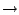

Next: Trajectories, Macros and Labels
Up: VMD Tutorial
Previous: Basics of VMD
Subsections
Multiple Molecules and Scripting
In this unit, you will learn to deal with multiple molecules simultaneously. You will also cover the basics of Tcl scripting and use it to edit atomic data, align two molecules together and color a molecule according to calculated properties.
- 1
- Start with a new VMD session. If you have just completed unit 1, you should quit VMD and then launch it again.
First, you will load the molecules that you will need.
- 1
- Open the Molecule File Browser from the File  New Molecule... menu item.
You need to load the X-ray crystal structure of ubiquitin. You can do
this in the same way you did in Unit 1, or directly in the command line:
- 2
- In the VMD terminal, type mol new 1UBQ.pdb.
An equilibration simulation for ubiquitin solvated in a water box has
been performed previously for a duration of 1 ns. Your files contain the
coordinates of the last frame of this equilibration. You will now compare the conformation of ubiquitin at the end of this simulation with the initial crystal structure.
- 3
- Now, start loading the simulation results into a second molecule. Staying in the Molecule File Browser, select New Molecule from the menu at the top of the form. Browse for the file ubiquitin.psf, then click on the Load button. You have just created a new molecule with a structure but no coordinates.
- 4
- Notice that the menu at the top of the window now says 1: ubiquitin.psf. This ensures that the next file that you load will be added to that molecule (molecule ID 1). Now, browse for the file ubiquitin-equilibrated.coor and click on Load again. This will load the coordinates and merge them with the previously loaded structure information.
You should now see two superimposed and unaligned molecules. One is the original crystal ubiquitin. The other one is surrounded by a cube full of water molecules.
You will now give names to your molecules so that you can identify them later.
- 1
- Double-click on the first molecule in the Main window molecule listing. The Rename Molecule dialog box should pop up. Type in crystal. Do the same thing for the second molecule, and call it simulation.
At this point, your Main window should look like Fig. 9. In front of the molecule name, there are four letters that you can use to manipulate your molecules.
Figure 9:
Main window with initial and final coordinates loaded into two separate molecules.
|
F stands for ``Fixed," meaning that that molecule won't move when you move the scene around. When the F is black, the molecule is fixed; when it is grayed out, the molecule is mobile.
- 2
- Double-click on the F to the left of a molecule description in the Main form. Then, try translating the scene with the mouse while one molecule is fixed. Do it again with both molecules fixed.
- 3
- When you are done, unfix both molecules and select the Display Reset View menu item to correctly reposition the two molecules relative to each other.
- 4
- Next, double-click on the D of one molecule. The D stands for ``Displayed" and when the D is grayed out it means that the molecule is hidden. You can control the visibility of all your molecules by double-clicking here.
- 5
- When you are done, make sure that only the crystal molecule is ``Displayed" and that none of the molecules are ``Fixed."
- 6
- Finally, double-click under the T column to the left of the crystal molecule. The letter T should now appear in front of it. This makes it the unique ``top" molecule. Making a molecule top makes it a target for scripting commands.
VMD includes support for the Tcl/Tk scripting language. This section will attempt to
provide the minimal amount of scripting that you need to know to use very useful features.
To execute Tcl commands, you will be using a convenient text console called Tk Console.
- 1
- Select the Extensions Tk Console menu item. A console window should appear with a prompt (Fig. 10). You can now start entering Tcl/Tk commands in it.
Figure 10:
The Tk Console console.
|
You will initially focus on the very basic of Tcl/Tk. Here are Tcl's set and get commands:
- 2
- Try the following commands:
| set x 10 |
|
| puts "the value of x is: $x" |
|
| set text "some text" |
|
| puts "the value of text is: $text." |
|
As you can see, $variable refers to the value of variable.
Here is a command that performs mathematical operations:
- 3
- Try experimenting with the expr command:
| expr 3 - 8 |
|
| set x 10 |
|
| expr - 3 * $x |
|
One of the most important aspects of Tcl is that you can embed Tcl commands into others by using brackets. A bracketed expression will automatically be substituted by the return value of the expression inside the brackets:
- 4
- Create some commands using brackets and test them. Here is an example:
| set result [ expr -3 * $x ] |
|
| puts $result |
|
You can edit atomic properties using VMD's atomselect command. The following examples will show you how.
- 1
- After making sure that the crystal molecule is the top molecule (if not, double-click on T). Open the Representations window using the Graphics Representations... menu item.
- 2
- Select the molecule called ``crystal" in the Selected Molecule pop-up menu at the top of the form. Type in protein as the atom selection, change its coloring method to Beta and its drawing method to VDW. Your molecule should now appear as a mostly red and green assembly of spheres.
You will now learn a very important Tcl command in VMD:
The first argument to atomselect is the molecule ID (shown to the very left of the Main form), the second argument is a textual atom selection like what you have been using to describe graphical reps in unit 1. The selection returned by atomselect is itself a command which you will learn to use.
- 3
- Type set crystal [atomselect top "all"] in the Tk Console window. This creates a selection containing all the atoms in the molecule and assigns it to the variable crystal. Instead of a molecule ID (which is a number), we have used the shortcut ``top" to refer to the top molecule.
The result of atomselect is a function. Thus, $crystal is now a function that performs actions on the contents of the ``all" selection.
- 4
- Type $crystal num. Passing num to an atom selection returns the number of atoms in that selection. Check that this number matches the number of atoms for that molecule (as read from the Main form).
- 5
- Type $crystal set beta 0. This resets the ``beta" field (which is being displayed) to be zero for all atoms. As you do this, you should observe that the atoms on your screen will suddenly change to a uniform color (since they all have the same beta values).
Atom selections are just references to the atoms in the original molecule. When you change a property (e.g. beta value) of some atoms through a selection, that change is reflected in all the other selections that contain those atoms.
- 6
- Now, type set sel [atomselect top "hydrophobic"]. This creates a selection containing all the hydrophobic residues.
- 7
- Let's label all hydrophobic atoms by setting their beta values to 1. You should know how to do this now: $sel set beta 1. If the colors in the OpenGL Display do not get updated, click on the Apply button at the bottom of the Representations form.
- 8
- You will now change a physical property of the atoms to further illustrate the distribution of hydrophobic residues. Type $crystal set radius 1.0 to make all the atoms smaller and easier to see through, and then $sel set radius 1.5 to make the hydrophobic residues larger. The radius field affects the way that some representations (e.g., VDW, CPK) are drawn.
You have now created a visual state that clearly distinguishes which parts of the protein are hydrophobic and which are hydrophilic. If you have followed the instructions correctly, your protein should resemble Fig. 11.
Figure 11:
Ubiquitin in the VDW representation, colored according to the hydrophobicity of its residues.
|
Atom selections are useful not only for setting atomic data, but also for getting information. Let's say that you wish to communicate which residues are hydrophobic, all you need to do is to create a hydrophobic selection and use get instead of set.
- 9
- Use get with your hydrophobic sel atom selection:
But there is a problem! Each residue contain many atoms, resulting in multiple repeated entries. Can you think of a way to circumvent this? We know that each amino-acid residue have the same backbone atoms. If you pick only one of these atoms per residue, each residue will be present only once in your selection.
- 10
- Let's try this solution. Each residue has one and only one -carbon (name CA = alpha):
| set sel [atomselect top "hydrophobic and alpha"] |
|
| $sel get resname |
|
Aha! It worked.
- 11
- You can also get multiple properties simultaneously. Try the following:
| $sel get resid |
|
| $sel get {resname resid} |
|
| $sel get {x y z} |
|
To properly visualize how ubiquitin has evolved during the simulation, you must first make sure to spatially superimpose your two molecules as best as you can. VMD offers some convenient commands to do this. You will now color the two molecules differently to visually distinguish them.
- 1
- Make sure that both molecules are ``Displayed" (by double-clicking on D in the Main form).
- 2
- In the Graphical Representations window, change the representation for the crystal molecule (remember to select it from the menu at the top of the window). Set its coloring method to ColorID, its color to 0 blue and its drawing method to Tube.
- 3
- You can apply changes to different molecules in the Graphical Representations window by selecting the target molecule from the Selected Molecule menu at the very top of the window. Choose the same representation for the molecule called simulation (ColorID and Tube), but set its color to 1 red instead.
- 4
- Create two atom selections containing the protein backbone -carbons (using the alpha atom selection macro) for each molecule by typing in the Tk Console window:
| set alpha1 [atomselect 0 "alpha"] |
|
| set alpha2 [atomselect 1 "alpha"] |
|
Here we have selected the -carbons because they are more stable than the protein's floppy side-chains and give a good indication of the protein's spatial conformation.
Even though the two molecules are very different (the crystal structure has no hydrogens), the selections that you created both contain the exact same atoms. VMD provides a command - measure fit - for finding the best fit between two selections corresponding to the same atoms:
- 5
- Find the transformation matrix M that will best map the first selection onto the second by typing:
| set M [measure fit $alpha1 $alpha2] |
|
- 6
- Apply the matrix you just found to the entire initial molecule (you had previously defined an atom selection called crystal for this), by typing:
In the OpenGL window, the two molecules should now be aligned based on
the positions of their -carbons. It is to be noticed that some parts
of the molecule are well-aligned, whereas other dangling ends and loops seem
more floppy (they have moved more during the equilibration). You can realign
the molecules by repeating the alignment process using the -carbons for
the the rigid residues only (in this case, the strands and the helix). The final result would resemble Fig. 12.
Figure 12:
Initial and final states of ubiquitin after spatial alignment.
|
Once the two molecules are aligned, you can compare their atoms' positions. To do this, you will use a pre-written script (since it is slightly complex). Feel free to have a look at the script if you feel adventurous; as you become experienced, writing such scripts will become trivial. To run a script from a file, you can use Tcl's source command:
- 1
- The script is in the coloring.tcl file. It will change the crystal molecule's beta values to reflect the displacement (in Å) of each atom of the molecule after equilibration. Let's run the script by typing:
- 2
- To see the new beta values, you need to set the Coloring Style of the crystal molecule to Beta, and hide the simulation molecule (by double-clicking on D).
The crystal molecule should now be colored according to the total displacement that occurred during the simulation. To have a better idea of what went on, we would like to adjust the color scale in a useful way.
- 3
- In the Graphical Representations window, choose the Trajectory tab. Under the Color Scale Range label, you can set the minimum and maximum values used for the beta values color scale. Make sure that the right representation (of the crystal molecule) is selected, then enter 0 and 5 and click on Set. This sets the color range to scale between 0 and 5 Å.
Figure 13:
The Color Range controls in the Representations window.
|
- 4
- Now, bring up the Color Controls window (Fig. 14) by choosing the Graphics Colors... menu item from the VMD Main window. Then select the Color Scale tab.
Figure 14:
The Color Controls window showing the Color Scale tab.
|
- 5
- In the color scale Method menu, select the BWR color scheme. This will show residues with a low displacement (0 Å) in blue, those with a high displacement (5 Å) in red, and those in between as white.
- 6
- You can now also adjust the color scale Midpoint to shift the level of atomic displacement that will be assigned to white. Try assigning a midpoint of 0.1.
You have now seen how to manipulate continuous color scales on custom data. Look at your molecule (it should resemble Fig. 15). You should now be able to determine which parts of ubiquitin are stable (blue) and which are floppy (red). In general, the dangling ends and loops are flexible, whereas the helices and strands are much more rigid.
Figure 15:
Ubiquitin colored according to displacement after a 1 ns equilibration.
|
Next: Trajectories, Macros and Labels
Up: VMD Tutorial
Previous: Basics of VMD
vmd@ks.uiuc.edu